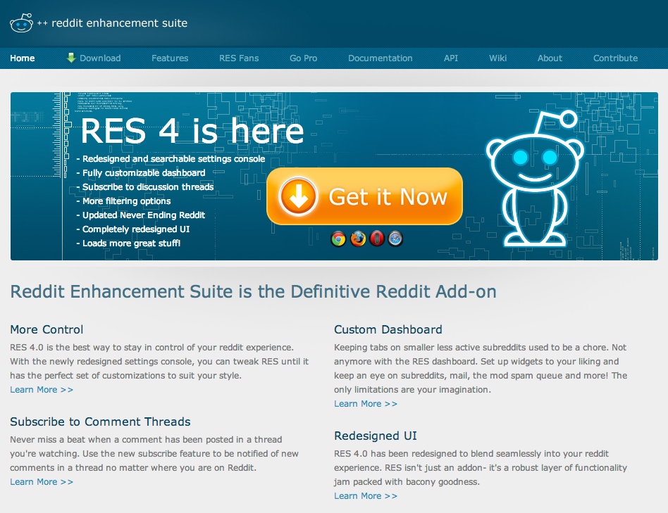
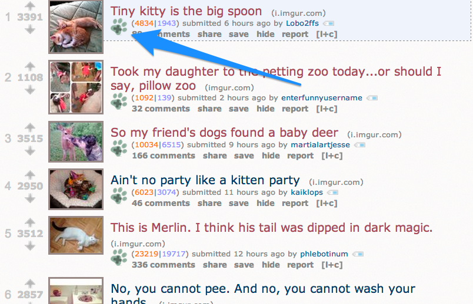
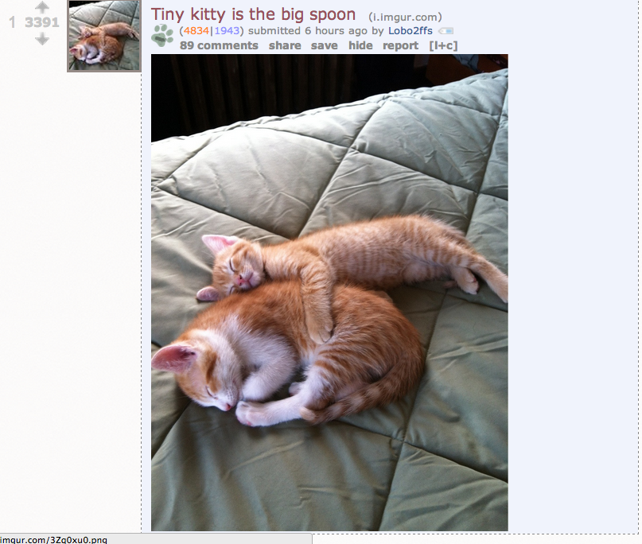
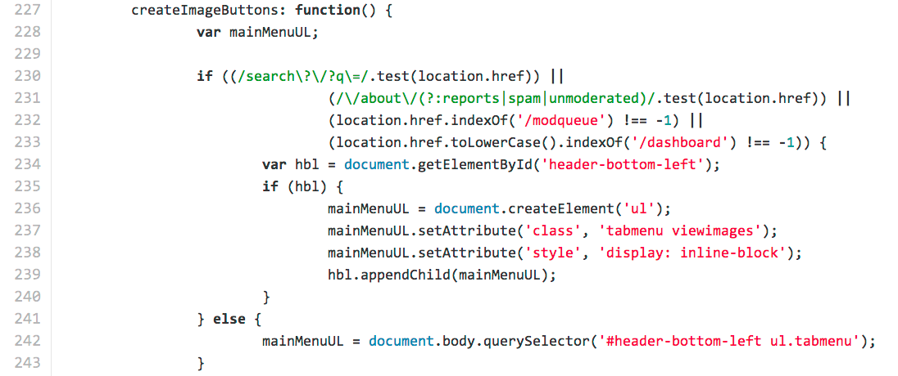
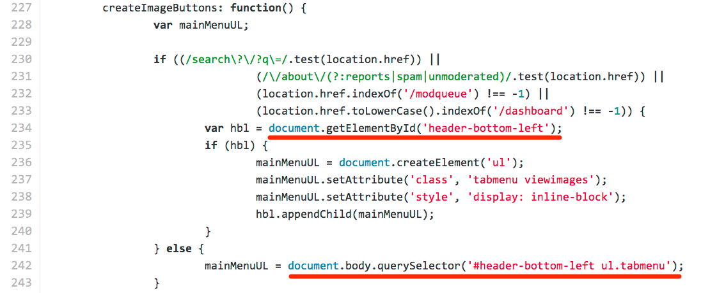
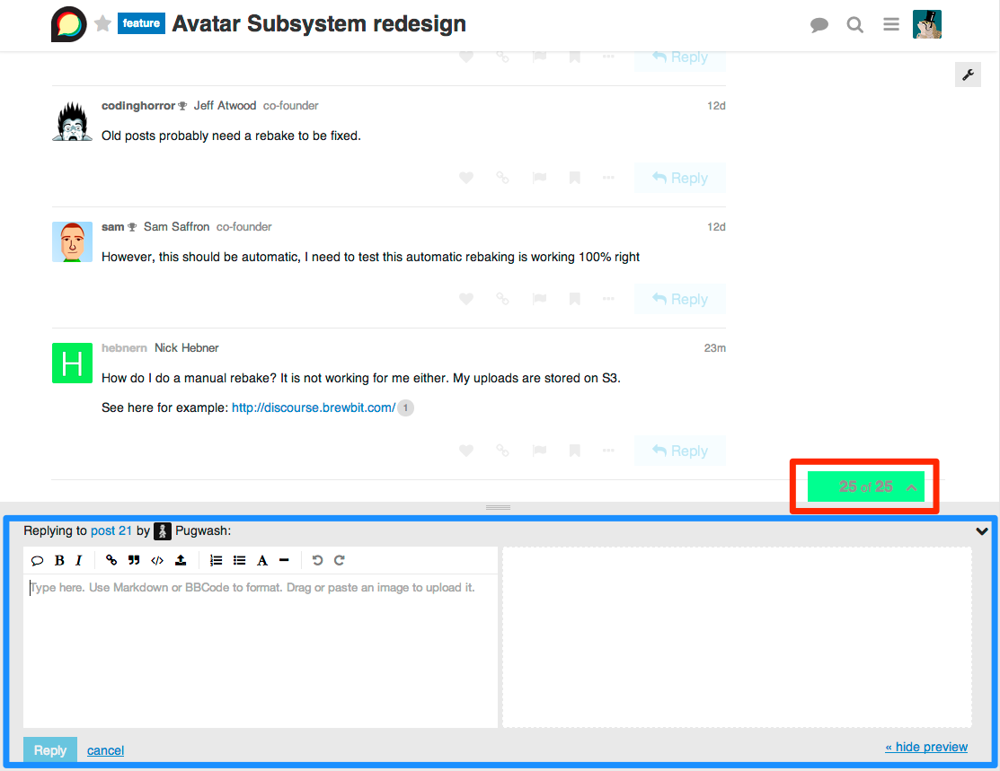

How it Works
- Take someone else's browser application
- Add features to it
- Distribute it
Reddit Enhancement Suite

Reddit Enhancement Suite

Reddit Enhancement Suite

Reddit Enhancement Suite

Reddit Enhancement Suite

The RES Way

How it Works
- CSS Selectors by class and id
- Tests `location.href` to determine URL
- If Reddit's markup changes, RES Breaks :(
What If...
- ...we didn't have to depend on selectors?
- ...the application was built using, say, an ambitious web framework?
- ...we just call the JS code directly?
Positive Side-Effect
- We didn't design Discourse to do this, we got it free!
- That's two APIs that an Ember.js application gives you free!
- Do you expose your server side API? Why not expose the client side one too!
Caveat
- If the client side API changes, your extension can break.
- Anecdotally this happens a LOT less than with jQuery selectors.
- ...I bet the RES guys wish Reddit was written this way!
Use Ember's Object Model
// Use `reopen` to add a new property to `App.User`
App.User.reopen({
screamName: function() {
return this.get('name').toUpperCase() + "!";
}.property('name')
});
var fish = App.User.create({ name: 'Evil Trout' });
console.log(fish.get('screamName'));
// EVIL TROUT!
A Note about ES6 Modules
- New Ember applications should be using ES6 modules and transpilation.
- In ES6 modules, `App.User` won't be accessible by default.
- How can we access the class to extend it?
Initializers
- Usually you want to extend an Application before it boots.
- Ember has a great way to register code to execute as Applications
boot up
Initializers
- Can have as many as you want
- Can specify `after` to tell an initializer to load after another.
- Ember will handle the dependencies!
Example
export default {
name: 'augment-user',
initialize: function(container, app) {
var User = container.lookupFactory('model:user');
User.reopen({ ... });
}
}
Container? WTF was that?
- The container is the structure Ember uses to manage all the objects and classes
it uses.
- You can query it for stuff!
- `lookup` finds instances for you.
- `lookupFactory` finds classes for you.
Container Example
// Finds the currently instantiated Topic controller
container.lookup('controller:topic');
// Finds the class used to instantiate a model
container.lookupFactory('model:user');
The Resolver
- How does Ember know what to return from `topic:controller`?
- The Resolver is used by the Container to translate a string into an object
- You can supply your own Resolver
Why is this cool?
- Any time someone asks for X, you can give them Y instead!
- It's a great way to extend applications!
- You can plug in your own components as needed
Creating a Custom Resolver
var AwesomeResolver = Ember.DefaultResolver.extend({
resolveTemplate: function(parsedName) {
var awesomeName = "awesome/" +
parsedName.fullNameWithoutType;
return Ember.TEMPLATES[awesomeName] ||
this.super(parsedName);
}
});
// Wire it up
var App = Ember.Application.extend({
Resolver: AwesomeResolver
});
With great power...
- Just because you can swap any component out doesn't mean you should
- Be very careful doing this, do it sparingly and think of compatibility.
- Try to add new components, but fall back on old ones if they do not exist.
Template Downsides
- Replacing the entire template is often too much. What if you only want to add
one little thing?
- Some Discourse contributors came up with some novel approaches
HAQL
var patcher = Ember.TemplatePatcher;
patcher.add("061dd3942f735486fbc91b5c7dfcf7a6",
function(ast, hash, str) {
var toInject = "<p>hello world</p>";
patcher.insertAt(ast, "if if if-else if[2]",
toInject, {"shift": 1});
});
HAQL
- Proposed by Discourse user lightyear
- Actually works! Used in a couple of plugins.
- Ultimately we decided it was too complicated.
Another approach: Ember.ContainerView
- A native Ember View class
- A container view can contain as many views as you want.
- The views can all use different types.
ContainerView Example
// post.hbs
<h1>{{title}}</h1>
{{view 'post-after-title'}}
// post-after-title.js
export default Em.ContainerView.extend();
To Append to it
container.lookupFactory('view:post-after-title').reopen({
addMyView: function() {
this.pushObject(Em.View.create({
templateName: 'my-template'
}));
}.on('didInsertElement')
});
About this approach
- Multiple plugins can insert markup safely
- It's a lot of boilerplate (well, by Ember standards!)
- Could it be made more generic?
Idea: {{plugin-outlet}}
- Supply it with an outlet name
- Context should be the same as the outer template
- Wire up templates automatically?
{{plugin-outlet}} Example
// post.hbs
{{plugin-outlet 'post-after-title}}
// templates/connectors/post-after-title/add-byline.hbs
By: {{author}}
{{plugin-outlet}}
- We added this to Discourse and it works great!
- In use in several plugins already.
- Can also supply a custom view name instead of a template.
- The full source code for the helper is on Discourse's github
Communication between Views
- Problem: How can a view in an Ember application communicate with another view?
Communication between Views

The Ember Way?

A different solution
- What if we could broadcast events within our app and things could listen for them?
- We could broadcast a `composerResized` event!
Ember.Evented
var doughBoy = Ember.Object.create(Ember.Evented);
doughBoy.on('poke', function() {
console.log('hehe!');
});
doughBoy.trigger('poke');
Dependecy Injection
- Who says it's just for Angular?!?
- We can inject `Ember.Evented` for Application-Wide Events
Application Events
app.register('app-events:main',
Ember.Object.extend(Ember.Evented),
{ singleton: true });
app.inject('controller', 'appEvents', 'app-events:main');
app.inject('route', 'appEvents', 'app-events:main');
app.inject('view', 'appEvents', 'app-events:main');
app.inject('model', 'appEvents', 'app-events:main');
Application Events
// views/composer.js
this.appEvents.trigger('composerResized');
// views/progress-bar.js
var self = this;
this.appEvents.on('composerResized', function() {
self.reposition();
});
Application Events Downsides
- This is going against Ember's guard rails a little.
- Use sparringly!
- If you're doing it a lot, consider why?
In Conclusion
- This is just the tip of the iceberg for extending live Ember apps
- Consider offering a client side API for your project!
- Most of this stuff was easy because Ember is such an awesome framework
Thanks!
- Follow me at @eviltrout
- Read my blog at eviltrout.com
- Or don't, you're capable of making your own decisions and don't have to
listen to me!